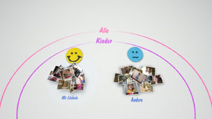
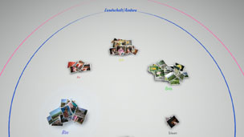

Verwalten von Fotos
Gruppieren von Fotos
Sie können Ereignisse auswählen und dann die Fotos, die zu den ausgewählten Ereignissen gehören, mithilfe einer der unten erläuterten Optionen gruppieren. Wählen Sie die Ereignisse mit den Fotos aus, die Sie gruppieren möchten, drücken Sie die  -Taste und wählen Sie dann
-Taste und wählen Sie dann  (Gruppe). Wenn Sie die gruppierten Fotos noch weiter eingrenzen möchten, wählen Sie die Gruppe bzw. die Gruppen mit den gewünschten Fotos aus und gruppieren Sie die Fotos dann mithilfe einer weiteren Option unter (Gruppe).
(Gruppe). Wenn Sie die gruppierten Fotos noch weiter eingrenzen möchten, wählen Sie die Gruppe bzw. die Gruppen mit den gewünschten Fotos aus und gruppieren Sie die Fotos dann mithilfe einer weiteren Option unter (Gruppe).
| Datum/Uhrzeit | Gruppierung nach Datum und Uhrzeit der Aufnahme. |
|---|---|
| Anzahl von Personen | Gruppierung nach der Anzahl der Personen auf den Fotos. |
| Altersgruppe | Gruppierung nach der Altersgruppe der Personen auf den Fotos. |
| Gesichtsausdruck | Gruppierung nach dem Gesichtsausdruck der Personen auf den Fotos. |
| Farbe | Gruppierung nach den Farben in den Fotos. |
| Kameratyp | Gruppierung nach dem Kameramodell, mit dem die Fotos aufgenommen wurden. |
| Spiel | Gruppierung nach dem Titel von Spielen. |
| Album | Gruppierung nach den Alben, die unter  (Foto) auf dem XMB™-Bildschirm erstellt wurden. (Foto) auf dem XMB™-Bildschirm erstellt wurden. |
Anmerkungen
- Mit [Alle auswählen] werden alle Fotos im [Bibliothekbereich] nach der ausgewählten Option gruppiert.
- Zum Gruppieren werden die Fotos analysiert, wobei das Ergebnis der Analyse unter Umständen nicht in jedem Fall den Erwartungen entspricht.
- Sie können aus den gruppierten Fotos eine Wiedergabeliste erstellen.
Beispiele für das Gruppieren von Fotos: Fotos von lächelnden Kindern
1. |
Gruppieren Sie die Fotos mithilfe der Optionen |
|---|---|
2. |
Wählen Sie die Gruppe mit dem Namen [Kinder] aus und drücken Sie dann die |
3. |
Wählen Sie  |
Beispiele für das Gruppieren von Fotos: Fotos mit blauem Himmel
1. |
Gruppieren Sie die Fotos mithilfe der Optionen |
|---|---|
2. |
Wählen Sie die Gruppe mit dem Namen [Landschaft/Andere] aus und drücken Sie dann die |
3. |
Wählen Sie  |
Löschen von Fotos
Wenn Sie ein Foto oder Album löschen wollen, wählen Sie das Foto oder Album aus, drücken die -Taste und wählen dann  (Löschen).
(Löschen).
Anmerkung
Wenn Sie Fotos im [Bibliothekbereich] löschen, werden die Fotos auch vom Systemspeicher des PS3™-Systems gelöscht.